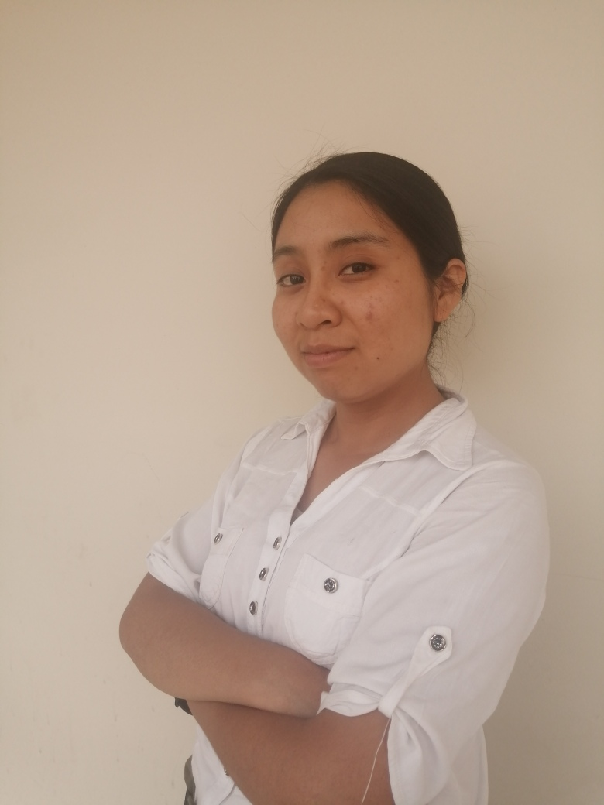

Sobre Mí
Estudiante de Ingeniería de Sistemas en la Universidad Nacional de San Agustín. Actualmente estoy terminando el 8º semestre. Me interesan los campos de la Gestión de Proyectos, la Inteligencia Artificial y la Ciencia de Datos. Mi lenguaje favorito es Java. Mis intereses de investigación son: Ingeniería de Software, Fintech y Ciencia de Datos.
Contacto: +51 983825222 | ftapara@unsa.edu.pe
Experiencia Laboral
Investigadora Junior en Unity/C#
UNSA / AREQUIPA
Desarrollo de Software usando el lenguaje C#
2022 – Presente
- Desarrollo en Unity orientado a Videojuegos e Interfaces.
- Bases de Datos: MySQL y SQLite.
- Gestión de Repositorios en GitHub y GitLab.
Proyecto: Juegos Serios para la rehabilitación de la motricidad fina: desarrollo y estudio de la experiencia del usuario (publicación del artículo en RiSTI 2024).
Educación
- Universidad Nacional de San Agustín - Estudiante de Ingeniería de Sistemas (2020-2024)
- Globant University - Backend Java (Abril 2023 - Diciembre 2023)
- Data Science Research Peru - SQL Server, Python, Power BI (Octubre 2023 - Enero 2024)
- AWS Academy - Técnico de Centro de Datos, Introducción a la Nube: Semestre 1 (Diciembre 2023 - Marzo 2024)
Voluntariado
Presidente del Comité de IA - ACM UNSA Student Chapter (2023 - 2024)
Referencias
Eng. Elizabeth Vidal
Investigadora UNSA
Teléfono: +51 986 451 412
Email: evidald@unsa.edu.pe
Eng. Eveling Castro
Investigadora UNSA
Teléfono: +51 987740628
Email: ecastro@unsa.edu.pe
Habilidades
- Habilidades de gestión
- Creatividad
- Negociación
- Comunicación efectiva
- Liderazgo
- Pensamiento crítico
- Trabajo en equipo